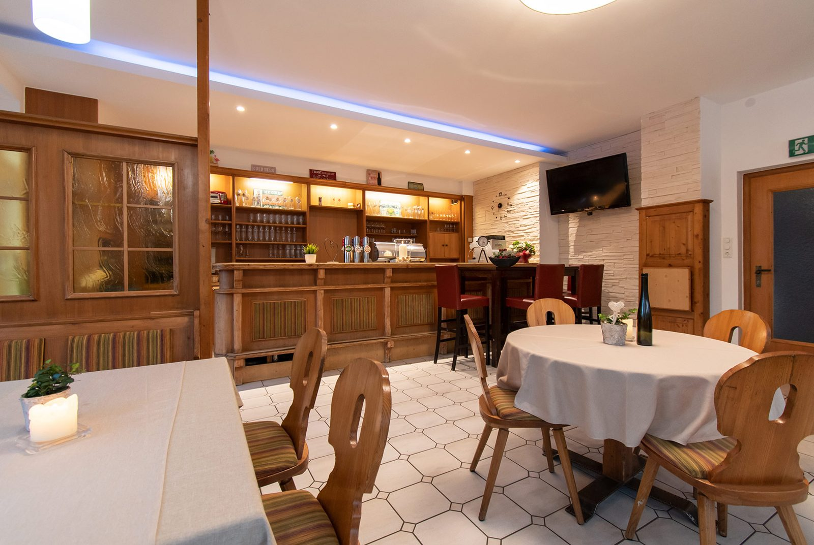

Extrastüberl
Das Extrastüberl befindet sich komplett getrennt von den anderen Räumlichkeiten, gleich zu Beginn des Gasthauses.
- Ausstattung: Gratis WLAN, Räume trennbar
- Ideal für: Speisen, Geburtstagsfeiern, Weihnachtsfeiern
Räume & Feiern
Unsere Räume können Sie für Feierlichkeiten, Sitzungen und Veranstaltungen reservieren – je nach Verfügbarkeit. Sagen Sie uns Anlass und Personenzahl, wir beraten Sie über die Möglichkeiten.
Das Extrastüberl befindet sich komplett getrennt von den anderen Räumlichkeiten, gleich zu Beginn des Gasthauses.
Im Gaststüberl genießen Sie von mittags bis abends unsere Getränke – oder nehmen einfach an der Bar Platz. Raucherbereich.
Besonders geeignet für Weihnachts- und Geburtstagsfeiern sowie Vorträge. Durch die großen Panoramafenster sehen Sie zum Gastgarten und zum Sportplatz hinaus.
Der große Saal ist auch für Bälle und Tanzveranstaltungen sowie Vorträge geeignet.
Für kleinere Feiern im ruhigen Ambiente.
Im Sommer erweitert der Gastgarten im Grünen jede Feier – mit Blick auf den Sportplatz und den Münichholzer Wald gleich daneben.
Anlässe
Vom Firmenessen bis zur Hochzeit mit 250 Gästen: Wir kombinieren Räume, Küche und Schank so, wie es zu Ihrem Anlass passt.
| Anlass | Personen | Passender Raum |
|---|---|---|
| Kleine Geburtstagsfeier | bis 20 | Stüberl im 1. Stock |
| Familienfeier, Firmenessen | bis 36 | Extrastüberl |
| Weihnachtsfeier, Vortrag, Sitzung | 40–90 | Saal klein |
| Hochzeit, Ball, Busgruppe | 100–250 | Saal groß |

Häufige Fragen zu Feiern
Am einfachsten über die Saal- und Raumanfrage. Sie erhalten anschließend ein Angebot. Telefonisch geht es ebenso: 07252 72013.
Ja, Busse sind willkommen. Ein großer Parkplatz und ein eigener Busparkplatz sind direkt beim Gasthaus vorhanden.
Im Extrastüberl und im Gaststüberl steht gratis WLAN zur Verfügung. Der kleine Saal eignet sich mit seiner Schankanlage besonders für Vorträge.
Das Extrastüberl liegt komplett getrennt vom übrigen Gasthaus und ist zusätzlich teilbar.